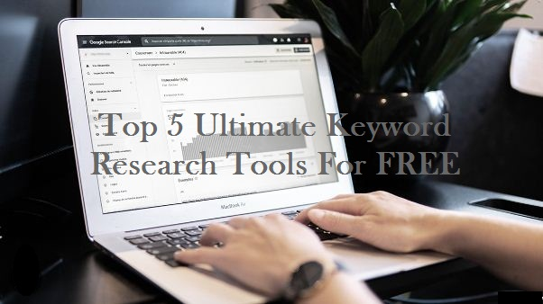
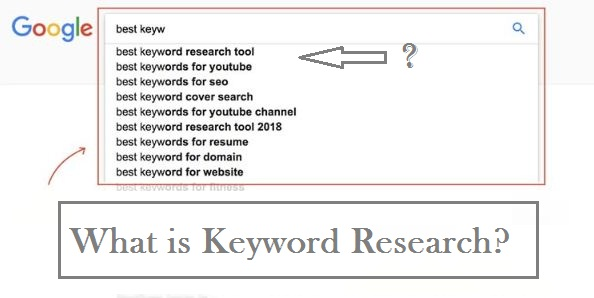
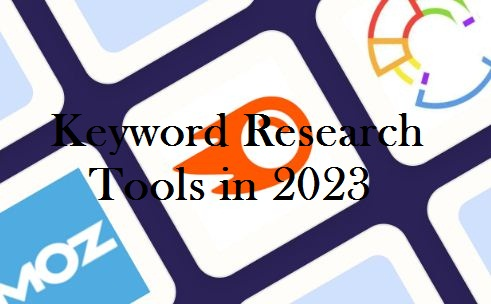
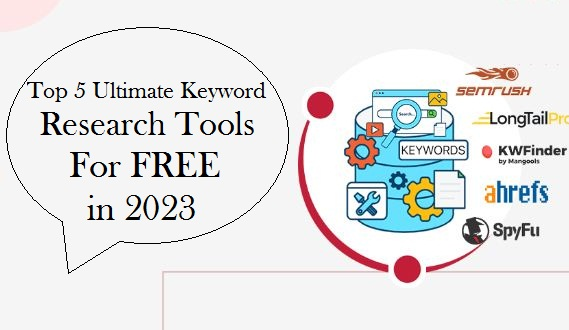
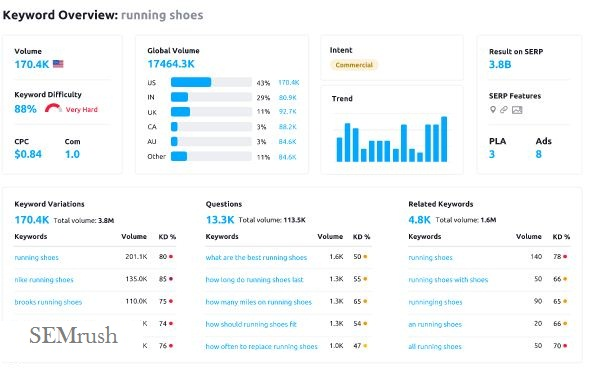
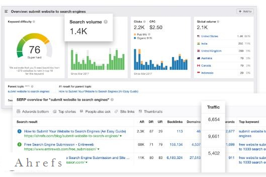
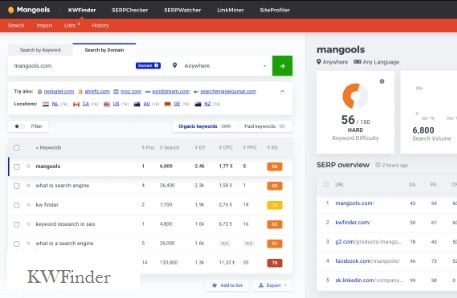
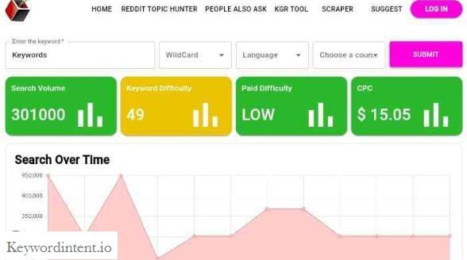
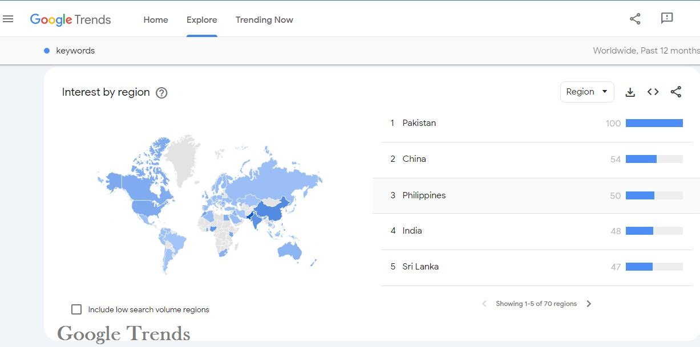

Top 5 Ultimate Keyword Research Tools For FREE

Table of Content
- What is Keyword Research?
- What are Keyword Research Tools?
- Trending Niche For Content Creation
- How Keyword Research Tools Work?
- Best Keyword Research Tools in 2023
- Start Freelancing As A Beginner in 2023
Top 5 Legit Online Earning Sites in 2023
Learn More: Click Here→
What is Keyword Research?
Keyword research is the process of analyzing the search terms and phrases that people use when looking for information, products, or services online. By understanding the language that their target audience uses, website owners and content creators can optimize their website's content to improve its visibility on search engines and attract more visitors.
Keyword research involves using specialized tools and techniques to identify the most relevant and popular search terms, assess their competitiveness, and analyze metrics such as search volume and click-through rates. Insights from this research can be used to inform content strategy, including the creation of headlines, meta descriptions, and body copy that incorporate targeted keywords.
What are Keyword Research Tools?
Keyword research tools are software applications or online platforms that help website owners and content creators identify and analyze the search terms and phrases that people use when searching for information, products, or services online.
These tools use algorithms and data analysis to provide features such as keyword suggestions, search volume estimates, competition analysis, and trend tracking, allowing users to identify the most relevant and popular search terms, evaluate their potential for ranking, and optimize their website's content accordingly.
Keyword research tools can offer valuable information and data to website owners and content creators, helping them to refine their SEO strategy and create more focused and effective content. By analyzing search trends, keyword volume, and competition, these tools can provide actionable insights to increase website traffic, improve search engine rankings, and boost conversion rates.
Top Trending Niches For Content Creation in 2023
Learn More: Click Here→
How Keyword Research Tools Work?
Keyword research tools work by collecting and analyzing data from search engines and other sources to provide insights on the search terms and phrases that people use when looking for information, products, or services online. Here's how they generally work:
- Users enter a keyword or phrase into the tool's search bar.
- The tool generates a list of related keywords and phrases, along with data on their search volume, competition level, and other metrics.
- The tool may also provide suggestions for long-tail keywords or related topics that could be relevant to the user's content.
- Users can then use this data to identify the most relevant and popular search terms, assess their competitiveness, and analyze metrics such as search volume and click-through rates.
- Insights from this research can be used to inform content strategy, including the creation of headlines, meta descriptions, and body copy that incorporate targeted keywords.
- Keyword research tools also provide other features such as competition analysis, trend tracking, and performance metrics to help users optimize their website's content for better search engine ranking.
What are the Best Keyword Research Tools in 2023?
Here's a list of some of the best free and paid keyword research tools in 2023:
Free keyword research tools:
Free and Paid keyword research tools:
The above mentioned lists are some of the best keyword research tools available. The FREE keyword research tools might not be that efficient as compared to the paid ones as they might not be updated in regular basis. But, we can use PAID research tools for FREE.
How To Start Freelancing As A Beginner?
Learn More: Click
Here→
Best Keyword Research Tool in 2023
I personally use SEMrush as my primary keyword research tool. SEMrush is a popular and comprehensive SEO tool that offers a range of features for keyword research, competitor analysis, backlink tracking, site auditing, and more. With SEMrush, you can easily identify the most relevant keywords for your website or content, analyze your competitors' strategies and performance, and track your own site's search rankings and traffic.
Why Use SEMrush?
SEMrush offers a free version of their tool that includes limited access to their keyword research features. With the free version of SEMrush, you can perform up to 10 searches per day for keyword data, including search volume, keyword difficulty, and related keywords.
However, some of the more advanced features of SEMrush, such as competitor analysis and site auditing, are only available with a paid subscription. Additionally, the free version of SEMrush limits the amount of data you can view for each keyword, so you may not get as detailed insights as you would with a paid subscription.
You can SignUp from multi[le accounts for keyword research. Since a single account can search only 10 keywords /day. So, technically it's better to signup multiple accounts for more precise keyword research.
Quick Ways To Make Money Online From Home
Learn More: Click Here→
Top 5 Keyword Research Tools in 2023
- SEMrush (Web) 
- Ahrefs (Web) 
- KWFinder (Web) 
- Keywordintent.io (Web) 
- Google Trends (Web) 
The free version of SEMrush is an excellent starting point for beginners in digital marketing. It provides access to some essential features, such as keyword research and traffic analysis, which can help businesses get a better understanding of their online presence. Additionally, the free version allows users to conduct limited research on their competitors' websites and backlink profiles.
While the free version has limited functionality compared to the paid version, it can still be a valuable resource for businesses looking to improve their online marketing efforts. As businesses grow and their needs evolve, they may want to consider upgrading to the paid version of SEMrush for more comprehensive features and tools. Visit The Official Site:Click Here→
Ahrefs' free version provides access to a limited set of features, including keyword research, backlink analysis, and site audit tools. For beginners just starting with their digital marketing efforts, these features can be incredibly helpful in understanding their online presence and identifying areas for improvement.
he keyword research tool, for example, allows users to identify the most relevant keywords for their niche and track their rankings over time. The backlink analysis tool can help businesses understand their backlink profile and identify opportunities for link building. Visit The Official Site:Click Here→
KWFinder offers a free version that provides access to limited features, including five keyword lookups per 24 hours and 50 backlink analysis rows per 24 hours. However, these features can still be valuable for beginners in keyword research and digital marketing.
The keyword research tool in KWFinder's free version allows users to find relevant keywords for their niche and analyze their search volume and competition. This can help businesses understand their audience and optimize their content for search engines. Additionally, the backlink analysis feature can help businesses understand their backlink profile and identify opportunities for link building.
While the free version of KWFinder may not offer the same level of functionality as the paid version, it can still be a useful resource for beginners looking to improve their online marketing efforts. As businesses grow and their needs become more complex, they may want to consider upgrading to the paid version of KWFinder for more comprehensive features and tools. Visit The Official Site:Click Here→
Keyword Intent is a keyword research tool that helps businesses understand user intent and identify relevant keywords for their niche. The platform offers several features, including keyword research, keyword analysis, and content optimization.
This keyword research tool has good user interface. I use this keyword research tool as a secondary research tool. Though the datas in the site are quite late updated, but it a beneficial tool to gather valuable insights about keywords worldwide. I suggest you to use keywordintent.io as your secondary keyword search tool because of its better and easier user interface. It is comparatively easier to figure out unlimited number of keywords and filter out the unnecessary keywords and include the necessary ones. Visit The Official Site:Click Here→
Google Trends is a powerful tool that can be used for keyword research in several ways. One of the primary ways businesses can use Google Trends for keyword research is by identifying trending keywords. By analyzing the popularity of specific keywords over time, businesses can gain insights into emerging trends and capitalize on them before their competitors.
Google Trends allows users to compare the popularity of multiple keywords at once. This can be useful in identifying which keywords are more popular and in demand in a particular niche or industry. By analyzing this data, businesses can focus their content creation and optimization efforts on the most relevant and high-traffic keywords.
Google Trends can be a valuable resource for businesses looking to improve their keyword research and content optimization efforts. By analyzing trends, comparing keyword popularity, and exploring related queries and topics, businesses can gain insights into their audience and optimize their content for maximum impact. Visit The Official Site:Click Here→
How To Host A Website For FREE On Github?
Learn More: Click Here→